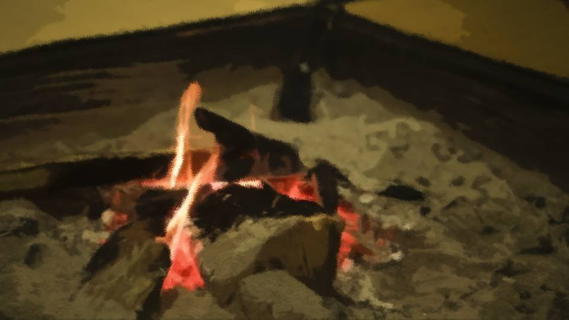

Script 0000243F

A crowd of residents had gathered at my house.
You could say it was everyone except the people of the Niimura main family.
Why had my house been chosen?
The answer was simple: my house was the closest to the Niimura main house.
You could say it was everyone except the people of the Niimura main family.
Why had my house been chosen?
The answer was simple: my house was the closest to the Niimura main house.
All the same, it was an imposing sight.
All the same, it was a menacing one.
The natas and maces I had made were gathered here.
And the Noh masks and the red robes.
By our standards, you could truly call this battle-ready.
All the same, it was a menacing one.
The natas and maces I had made were gathered here.
And the Noh masks and the red robes.
By our standards, you could truly call this battle-ready.
Someone had tipped off someone.
That there was a witch here―
That there was a witch here―
"Are you all really going to do this?"
I pressed them once again, stubbornly.
―Don't say that now. It's already been decided, hasn't it? Lost your nerve?
―That's right. If not now, when?
I pressed them once again, stubbornly.
―Don't say that now. It's already been decided, hasn't it? Lost your nerve?
―That's right. If not now, when?
Once everyone's suspicion had fed on itself this far, it was really something.
All this uproar, just because a girl with no ties of any kind to this settlement had come.
But the most important thing―that girl supposedly had a danger-sense ability like Sakura-chan's.
Even so, I never thought it would turn into something this big.
All this uproar, just because a girl with no ties of any kind to this settlement had come.
But the most important thing―that girl supposedly had a danger-sense ability like Sakura-chan's.
Even so, I never thought it would turn into something this big.
"But...! You've all lost your minds after all! Isn't this just curse-killing in the end!?"
―That's not it. The culprit isn't among us.
―Right. Not one of us is the culprit.
―That's not it. The culprit isn't among us.
―Right. Not one of us is the culprit.
"Then who are you saying did the killing...!"
―They're here now, aren't they? That's why we kill.
―Don't tell me you're planning to betray us?
―They're here now, aren't they? That's why we kill.
―Don't tell me you're planning to betray us?
"............
That's..."
―A traitor is the witch's pawn.
―It's all to protect everyone.
―Shirozaki, you too―
―A traitor is the witch's pawn.
―It's all to protect everyone.
―Shirozaki, you too―
Yes, this was the true nature of this settlement.
One for all, all for one.
Could such a selfish, self-serving interpretation be allowed?
The founder of this settlement could not have meant it that way.
One for all, all for one.
Could such a selfish, self-serving interpretation be allowed?
The founder of this settlement could not have meant it that way.
Then was the best course for me to keep trying to calm everyone down?
That was already settled: it would not be allowed anymore.
If I defied them, I would end up cut down by my own handiwork before that kid was.
That was already settled: it would not be allowed anymore.
If I defied them, I would end up cut down by my own handiwork before that kid was.
"W-wait!
All right... all right... There's no way I'd betray you..."
―Can we really trust you?
"Of course... You know who was curse-killed after Sakura-chan, don't you?"
―............
―Fair enough. Now, let's go.
―Can we really trust you?
"Of course... You know who was curse-killed after Sakura-chan, don't you?"
―............
―Fair enough. Now, let's go.
With that, everyone put on the red robes and the Noh masks.
And in their hands, natas and maces.
Why go to the trouble of dressing like this?
It would be easier to bring guns than weapons like these.
This was to show our resolve.
And in their hands, natas and maces.
Why go to the trouble of dressing like this?
It would be easier to bring guns than weapons like these.
This was to show our resolve.
It was the Niimura main family that had invited that girl here.
In other words, killing the girl meant defying the Niimura main family.
And defying the Niimura main family meant defying the will of this settlement.
But if everyone besides the Niimura main family rose up, that was another story.
In other words, killing the girl meant defying the Niimura main family.
And defying the Niimura main family meant defying the will of this settlement.
But if everyone besides the Niimura main family rose up, that was another story.
This was a coup.
To show, as people of the Arata settlement, our will to protect this settlement.
According to the ones who had been scouting, the Niimura sisters had gone out somewhere.
Fighting with weapons like these, the biggest threat to us was those sisters.
Even all of us together would have a hard time taking on those two sisters.
To show, as people of the Arata settlement, our will to protect this settlement.
According to the ones who had been scouting, the Niimura sisters had gone out somewhere.
Fighting with weapons like these, the biggest threat to us was those sisters.
Even all of us together would have a hard time taking on those two sisters.
I made up my mind as well, and put on the menacing gear.
But did they really mean to storm the Niimura house without any real plan?
But did they really mean to storm the Niimura house without any real plan?
No, this showed that everyone's hearts were not as one.
There were radical ones like the ones just now, and there were conservative ones like me.
Not every single one of them wanted to kill.
What would happen if you went against this tide?
Knowing that, they had no choice but to join in.
Yes, just like me.
There were radical ones like the ones just now, and there were conservative ones like me.
Not every single one of them wanted to kill.
What would happen if you went against this tide?
Knowing that, they had no choice but to join in.
Yes, just like me.
Hey, Yuriko, I'm in the wrong, aren't I? There's no way I should be doing this, is there?
You were the first one curse-killed. You'd understand, wouldn't you?
The idea that the girl from Motoki-cho is the culprit of the curse-killings...
You were the first one curse-killed. You'd understand, wouldn't you?
The idea that the girl from Motoki-cho is the culprit of the curse-killings...

When I went outside, everyone was hiding by the hedge.
What had gotten into the bunch who had been so out for blood?
Or had they lost their nerve now, of all times?
I followed suit and crouched down beside them.
What had gotten into the bunch who had been so out for blood?
Or had they lost their nerve now, of all times?
I followed suit and crouched down beside them.
"What's wrong?"
―Quiet!
Everyone's eyes were turned not toward the Niimura main house― but toward the mountain path.
And at the end of it...
―Quiet!
Everyone's eyes were turned not toward the Niimura main house― but toward the mountain path.
And at the end of it...


A small figure was staggering toward the Niimura main house.
That was Kana-chan, no doubt about it.
What had happened to her, always so full of energy...?
That was Kana-chan, no doubt about it.
What had happened to her, always so full of energy...?
As she came closer, the reason became clear.
Her face was pale, and she was drenched in cold sweat.
And above all, a large wound on her back.
I could see blood dripping from it.
Her face was pale, and she was drenched in cold sweat.
And above all, a large wound on her back.
I could see blood dripping from it.
What? What happened?
For some reason, Kana-chan was badly hurt.
And at that rate, she wouldn't last long.
For some reason, Kana-chan was badly hurt.
And at that rate, she wouldn't last long.
Then, as if chasing her, a slender figure appeared.

Was that Chigaya-chan...?
Holding a nata, and covered in blood as well.
That wound of Kana-chan's had probably been made by a nata.
And if Chigaya-chan was holding that nata, then...
Holding a nata, and covered in blood as well.
That wound of Kana-chan's had probably been made by a nata.
And if Chigaya-chan was holding that nata, then...
No, but even so, I couldn't just leave the two of them like that.
If they didn't get treated right away, they would die for sure.
If they didn't get treated right away, they would die for sure.
"Hey, forget killing the witch, we have to save those two!"
―I said be quiet! Besides, this is our chance, isn't it!?
"Our chance?"
―Yeah. The two most troublesome ones are half dead. Better to kill them both together.
"Hey! Knock it off!"
―I said be quiet! Besides, this is our chance, isn't it!?
"Our chance?"
―Yeah. The two most troublesome ones are half dead. Better to kill them both together.
"Hey! Knock it off!"

I grabbed Se by the collar.
I couldn't see his face behind the Noh mask, but I could still tell his expression.
Se glared at me, his expression unchanged.
I couldn't see his face behind the Noh mask, but I could still tell his expression.
Se glared at me, his expression unchanged.
As an aside, there are four family lines in the Arata settlement.

So there are four surnames as well, but most of them have split into branch families again and again, and people with the same surname often belong to different households.
The Niimura family especially, since it represents the settlement, has split into branch families over and over, so that even with the same surname, the common ancestor is many generations back; they're nearly strangers.
So there were people going by the name Niimura mixed into this group too.
The Niimura family especially, since it represents the settlement, has split into branch families over and over, so that even with the same surname, the common ancestor is many generations back; they're nearly strangers.
So there were people going by the name Niimura mixed into this group too.
The four family lines are as follows.
Niimura―the main family represents the settlement; they excel at martial arts and hunting.
Shirozaki―the line that makes weapons and tools.
Niijima―the line versed in farming and nature.
And
Niimura―the main family represents the settlement; they excel at martial arts and hunting.
Shirozaki―the line that makes weapons and tools.
Niijima―the line versed in farming and nature.
And
this guy I had by the collar was Se.
His name was Masateru Se, and he was one year younger than me.
The Se family is the line that manages the water and the irrigation facilities.
His name was Masateru Se, and he was one year younger than me.
The Se family is the line that manages the water and the irrigation facilities.
In the second curse-killing, he had lost his much younger sister.
So he hated the culprit of the curse-killings all the more.
No, more than hating, I had a feeling that in his case, killing the culprit had become the goal in itself.
Ever since the watch on Kotaro-kun ended, he had suspected every resident.
So he hated the culprit of the curse-killings all the more.
No, more than hating, I had a feeling that in his case, killing the culprit had become the goal in itself.
Ever since the watch on Kotaro-kun ended, he had suspected every resident.
It was thanks to him that I could stay conservative.
If I let hatred drive me and thought of nothing but revenge, I would end up like him.
Thanks to that example of what not to be, I could still stay calm.
But sadly, everyone had come around to his radical way of thinking.
It is precisely because my wife was killed that I can keep my self-control.
If I let hatred drive me and thought of nothing but revenge, I would end up like him.
Thanks to that example of what not to be, I could still stay calm.
But sadly, everyone had come around to his radical way of thinking.
It is precisely because my wife was killed that I can keep my self-control.

"Hey, Ken-chan's riiight!
There's no need to kill Chi-chan, let alone Kanakana!"
The woman with this shrill voice was Kaori Niijima.
She talked like that, but she was older than me, nearly 60.
Back when Sakura-chan was a kid, she used to tease people with impressions of Kaori-san.
The woman with this shrill voice was Kaori Niijima.
She talked like that, but she was older than me, nearly 60.
Back when Sakura-chan was a kid, she used to tease people with impressions of Kaori-san.
―Kaori-san, who in your family was curse-killed?
"Huh? My oldest son and my second son. Ma-kun, why are you asking that?"
―They killed that many, and you don't hate the culprit? Two sons!
"Buuut, let's save Chi-chan and Kanakana. 'Cause they're our fellow villagers, right?"
"Huh? My oldest son and my second son. Ma-kun, why are you asking that?"
―They killed that many, and you don't hate the culprit? Two sons!
"Buuut, let's save Chi-chan and Kanakana. 'Cause they're our fellow villagers, right?"
Se shoved me aside, and the next instant,
he swung the nata in his hand in a great vertical arc.

"Ah... gah-gah... Ma-kun... why..."
That faint voice came from under the Noh mask, and Kaori-san collapsed with a thud.
That faint voice came from under the Noh mask, and Kaori-san collapsed with a thud.
―Hmph, you cursed woman. Die for Arata!
Se spat that at Kaori-san.
"Hey, what are you doing!? That's enough out of you!"
―I'm serious. Anyone who gets in the way is an enemy.
―I'm serious. Anyone who gets in the way is an enemy.

―That's right! Se's right!
―We should kill everyone in the Niimura main house!
―Follow Se!
Then everyone started marching straight toward the Niimura main house.
It's pathetic. I couldn't do anything more to stop them.
I crouched down beside Kaori-san.
It's pathetic. I couldn't do anything more to stop them.
I crouched down beside Kaori-san.
"Hey, Kaori-san, hang in there!"
"Nngh... Ken-chan..."
"Let me see the wound...!"
I took off Kaori-san's Noh mask and checked where she had been cut.
"Nngh... Ken-chan..."
"Let me see the wound...!"
I took off Kaori-san's Noh mask and checked where she had been cut.
"Kaori-san, you're okay. It missed anything vital, and the bleeding isn't bad.
But your collarbone's completely broken, so don't move."
"Sorry, Ken-chan... You go too, Ken-chan..."
"I've had enough...! They've all lost their minds!"
"No, that's not it... Help... the kids who came from Motoki-cho..."
"Kaori-san..."
"Sorry, Ken-chan... You go too, Ken-chan..."
"I've had enough...! They've all lost their minds!"
"No, that's not it... Help... the kids who came from Motoki-cho..."
"Kaori-san..."
"I'm not gonna die, so...
'Cause if I let the girl from Motoki-cho die like this...
my boys who got curse-killed would be mad at me..."
"All right... I don't know how much I can do, but... I'll do what I can."
"All right... I don't know how much I can do, but... I'll do what I can."